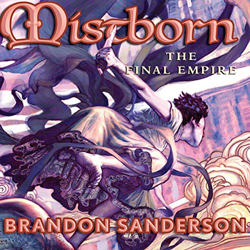
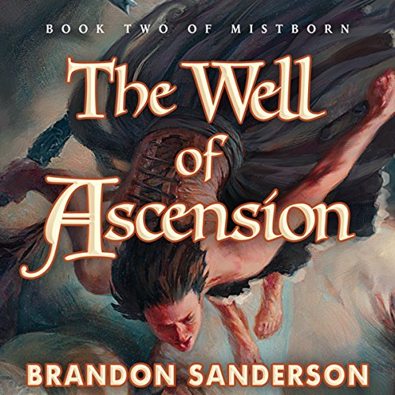
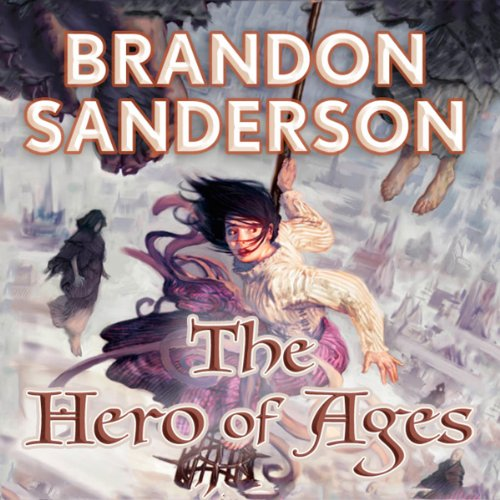
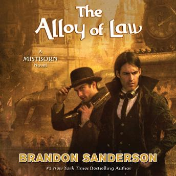
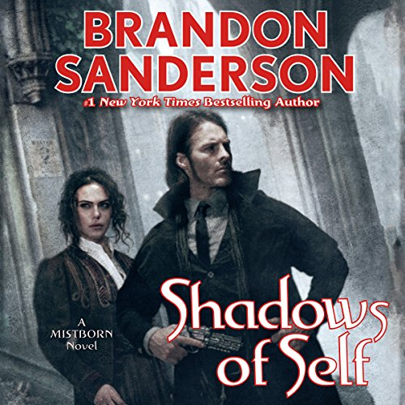
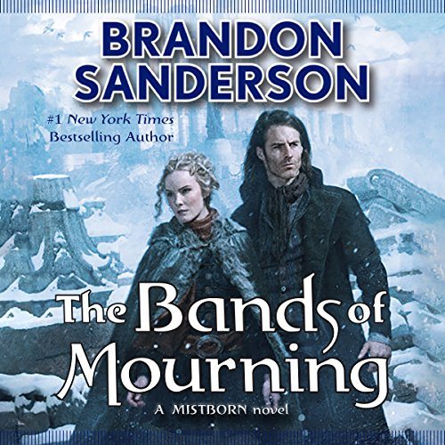
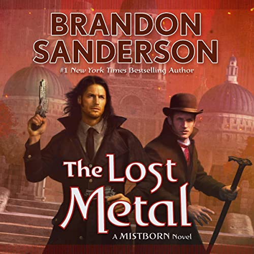

For updates on everything Mistborn for TV and film, this is just the place to be!
For a long time, it has been assumed that Mistborn would be among the first if not the very first of Brandon's novels to be adapted to the screen. After all, it's the first book that most people read (apart from his books in The Wheel of Time, which already has it's own series on Amazon Prime) and it is short enough that it coudl work as both a movie or a TV show, depending on how many details from the text they want to be preserved and how they want viewers to see it. Vin, Kelsier and Spook are instantly lovable characters who don't need hours of backstory to set themselves up, and the story of a heist on the dictator is a simple yet alluring logline.

Mistborn Movie 2023
| Date released | Title | US Cover |
|---|---|---|
| 2006 | The Final Empire |  |
| 2007 | The Well of Ascension |  |
| 2008 | The Hero of Ages |  |
| Date Released | Title | US Cover |
|---|---|---|
| 2011 | The Alloy of Law |  |
| 2015 | Shadows of Self |  |
| 2016 | The Bands of Mourning |  |
| 2022 | The Lost Metal |  |